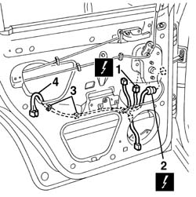

5505B20 rear door wiring - r r
- Path
- Procedures > 55 ELECTRICAL EQUIPMENT > 5505 ELECTRICAL CIRCUIT FOR INSTRUMENTS/INDICATORS > 5505B door,boot and bonnet wiring. > 5505B20 rear door wiring - r r
- Kind
- repair procedure (removal / refitting; the operation number is the code)
- Applies to
- all engines; all production periods
- Interactive page
- https://sloeber94.github.io/elrnDB-a156/en/#/3238386
Applies to: all engines; all production periods
 Removing
Removing
 Refitting
Refitting7010N20 rear side door lock motor/catch assembly - r r with door panel and support frame removed
1. Disconnect power window motor electric connection.
 | Name | Connector |
|---|---|---|
1 | Rear left electric window motor |
| Name | Connector |
|---|---|---|
1 | Rear right electric window motor |
2. Disconnect door cable electric connection.
| Name | Connector |
|---|---|---|
2 | Rear / rear door coupling left |
| Name | Connector |
|---|---|---|
2 | Rear right door connection |
3. Disconnect loom stop springs from door frame.
4. Extract loom from the inside of door.

Applies to: all engines; all production periods
Refitting
RemovingCheck wiring is not damaged and each single conductor is properly anchored to connections.
Check connections have secondary lock devices.
If necessary carry out proper continuity tests.
Insert wiring inside door compartment.
Hook wiring stop springs to door frame.
Connect electric connections.
7010N20 rear side door lock motor/catch assembly - r r with door panel and support frame removed
Topics linked from this page (5)
- 7010N20 rear side door lock motor/catch assembly - r r with door panel and support frame removed
- D35 Rear / rear door coupling left
- D36 Rear right door connection
- N65 Rear left electric window motor
- N66 Rear right electric window motor